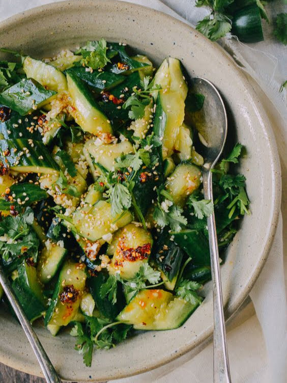

yao yao's corner
Garlic Chili Oil Cucumbers

Description
This is a refreshing Chinese dish that reminds me of my dad's cheerful mood as he calls me from downstairs.
"Better than Ramsey Gordon!" he'd exclaim (of course with Gordon Ramsay's name out of order from habit of talking in Chinese).
A mixing bowl full of cold, crispy cucumbers topped with chili oil and cilantros would sit in his arms, tilted so that I could capture them in all their glory.
In college, I would prepare enough of this to last me a whole week to eat alongside a bowl of rice and some protein of my choosing (which would usually be some simple eggs with my lack of experience in the kitchen).
Ingredients
- Cucumbers
- 1 tsp salt
- 2 cloves garlic
- 3 tsp soy sauce
- 1 1/2 tbsp rice vinegar
- 2 tsp sesame oil
- 1 tbsp chili oil
- 2 1/2 tsp sugar
- 1 handful of cilantro
Steps
- Wash the cucumbers and slice them into bite sized pieces (or if you're using smaller cucumbers, smash them with the flat side of the knife just so that they crack open).
Set aside in a bowl and add salt (this will help crisp them up).
- Mince the garlic and add to a small bowl. Mix with the soy sauce, rice vinegar, sesame oil, chili oil, and sugar.
- Rinse off your cucumbers and pat them dry. Then plate the cucumbers, drizzle the sauce over it, and garnish with chopped cilantro. Enjoy with a bowl of rice and other dishes, or by itself as a healthy snack!